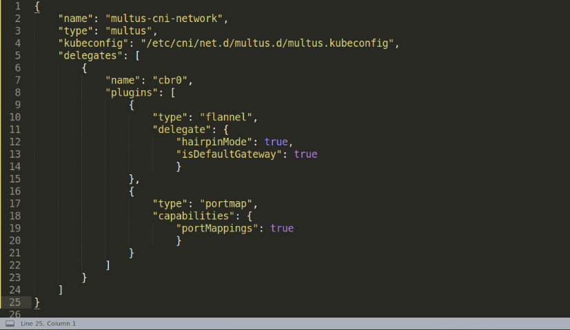
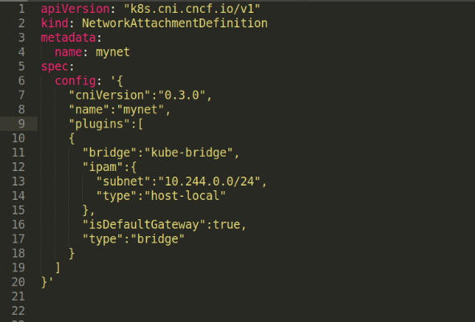
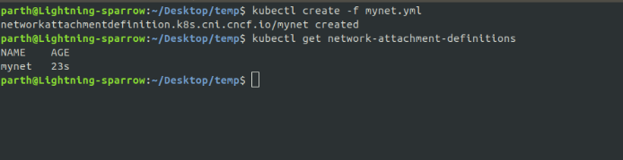
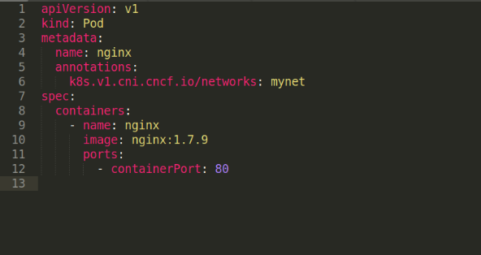

Multus Example:
In this blog, I am going to create a pod with two interfaces one having flannel network and the other having kube-router network.
Before we begin, note: you can find all the files used in this blog here.
Concept:
When using Multus, we have to do two things to add extra interfaces to our pods:- First create a Network-Attachment-Definition for our extra interfaces having config field for it's CNI config (Note: Network-Attachment-Definition is a Custom Resource Definition(CRD) that Multus uses)
- Then add an annotations to our pod definition yaml of kind: k8s.v1.cni.cncf.io/networks: and give name(same as in Network-Attachment-Definition CRD) of the interfaces that we want to attach to it.
How it works?
When we tell kubectl to create our pod then kubelet creates network namespace for that pod and then required information is passed to Multus CNI plugin for adding network interface and setting up the network.Multus checks for annotations: k8s.v1.cni.cncf.io/networks: for the names of interfaces to create if any. If so, then Multus searches for Network-Attachment-Definition for those interfaces and then add those interfaces to the pod.
Prerequisite:
I am assuming that you have created your Kubernetes cluster and have configured a default network. In our case, we are going to use flannel as our default network. You can create that with the following command after creating your cluster:Verification:
RunNote:
- 10-flannel.conflist is created in /etc/cni/net.d
- flannel binary is present in /opt/cni/bin
Installing Multus
We can install and setup multus either manually or by using multus-deamonset.yml provided by Multus team. If you are doing it for the first time then it is recommended to use multus-daemonset.yml for keeping things simple. I am going to do it by daemonset method.
(If you want to know what daemonset is doing then read this Multus/how-to-use-guide)
For installing Multus by daemonset type the following command:
Verification:
RunNote:
- 00-multus.conf is created in /etc/cni/net.d
- Multus binary is installed in /opt/cni/bin
What the Multus daemonset file does
- Starts a Multus daemonset, this runs a pod on each node which places a Multus binary on each node in /opt/cni/bin
- Reads the lexigraphically (alphabetically) first configuration file in /etc/cni/net.d, and creates a new configuration file for Multus as /etc/cni/net.d/00-multus.conf, this configuration is auto-generated and is based on the default network configuration (which is assumed to be the alphabetically first configuration)
- Creates a /etc/cni/net.d/multus.d directory on each node with authentication information for Multus to access the Kubernetes API.
In our case multus config is automatically generated by Daemonset using 00-flannel.conflist as it was alphabetically first file in /etc/cni/net.d.
Exploring 00-multus.conf
file: /etc/cni/net.d/00-multus.conf
There are two methods to define 00-multus.conf file:
- Delegate method (like the above file)
- "clusterNetwork"+"defaultNetwork" method (In which we don't use delegates field).
- name: the name of the network
- type: "multus": binary file of multus
- kubeconfig: kubeconfig file for the out of cluster communication with kube-apiserver. See the example kubeconfig. If you would like to use CRD (i.e. network attachment definition), this is required
- delegates: number of delegate details in the Multus. This is a list of CNI config of the different networks we want to use.
Multus uses delegates for clusterNetwork and defaultNetwork. That is, this list of CNI config will always be used for any pod you create.
Here, we have specified only one delegate named "cbr0". So, any pod that we create will have an interface for this network by default. Since cbr0 is first in our delegate list, it will be used for creating "clusterNetwork" of Kubernetes i.e. eth0 interface on all pod will use flannel. And if we would have specified more interface in delegates then they would have been used for "defaultNetwork" by Multus. That is interfaces for those would always be created in every pod we make.
Ok, that means our pod can have multiple interfaces now using delegate method. But all pods will have the same number of interfaces. What if we want to create one pod with 3 interfaces and the other with 4 interfaces?
We will use our Network-Attachment-Definition for that. The interface that we specified in delegates field of 00-multus.conf will remain same for all pods. If we want to add additional interfaces to our pods then we have to specify that in annotations: k8s.v1.cni.cncf.io/networks: with names of Network-Attachment-Definitions we create, delimited by comma(,). We will get to know more about Network-Attachment-Definitions usage in a while but before that few points about Multus:
- The default interface will always have name eth0 because our Kubernetes uses it.
- Any additional interface that we have in multus are named as net1, net2... until and unless we specify the name in annotation field.
- The first delegate will be used for the cluster network.
Using Multus:
Let us create our second interface with kube-router network. As described before we have to create CRD of kind: Network-Attachment-Definition for defining our interfaces. The following is the definition of our required Network-Attachment-Definition for kube-router:file: mynet.yml

Three things to note:
- The kind for our CRD is NetworkAttachmentDefinition
- Under metadata we have field name this is the name that we want to give to our configuration.
- The config field under spec. It has normal CNI configuration that will be used for Network of our custom interface
Verification:
Use command
Now, we have successfully created our Network-Attachment-Definition.
If you want to see description of mynet Network-Attachment-Definition then use the command:
Last but not least: Creating the pod
file: pod.yml
This is our simple pod definition with one new field under annotations k8s.v1.cni.cncf.io/networks: mynet telling multus to use Network-Attachment-Definition having name mynet.
Let us create our pod with the command:
Once, the pod is created it will have 3 interfaces-
- lo: loopback interface
- eth0: with flannel network
- net1: with kube-router network
Verification: Checking for multiple interfaces
Use command:And you will see three interfaces as below:
 Cheers:)
Cheers:)If you are still stuck then you can ask for help in intel slack or open an issue in intel/multus-cni/issues
Conclusion
We have created a pod with two interfaces using Multus. This is the simplest example that I have covered but there is more that can be done. I have added a few links in the references section for those. If you want to create multiple interfaces without using delegates method then read this blog by Dougtv